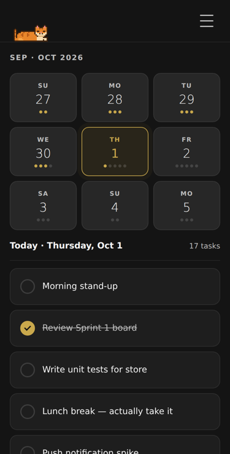
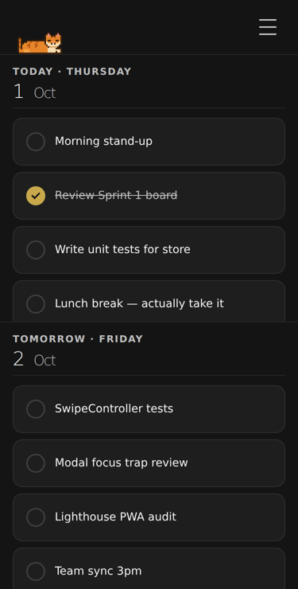
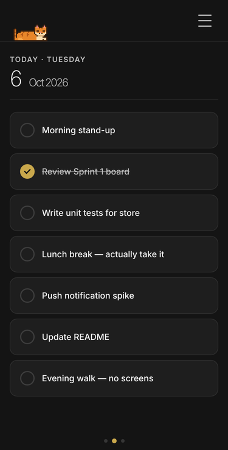

Capture it in seconds
Open the menu, tap + New Task, and give it a title. Add notes, a date, a reminder time or a repeat pattern only when you need them — the form stays out of your way until you do.
DYDTT is a quiet, beautifully crafted home for the things you mean to do every day. One uncluttered screen, one menu, and a gentle swipe between days — with a well-timed nudge when it matters.
Built for the habits, routines and small commitments that shape a good week: precise enough to trust, calm enough to keep open all day.

Most task managers ask you to manage the manager. DYDTT does the opposite: the interface fades into the background so your day can take centre stage.
Open the menu, tap + New Task, and give it a title. Add notes, a date, a reminder time or a repeat pattern only when you need them — the form stays out of your way until you do.
Swipe left or right to move between days; scroll to move through tasks. Prefer a keyboard? The arrow keys do exactly the same. Yesterday, today and tomorrow are always one gesture apart.
One tap marks a task done, and the little progress dots on each day update instantly. Behind the scenes, your list is saved on-device and — once you sign in — safely backed up.
Some days call for a wide-angle view of the week; others call for nothing but the next thing to do. DYDTT lets you choose, and remembers your preference on each device. Every view shares the same gentle swipe and the same keyboard shortcuts, so switching never means relearning.


The visible interface is deliberately small. The care went into everything you don't see: how repeats behave, how reminders arrive, and how your data stays safe when the signal drops.
Swipe between days, scroll through tasks, and reach every setting from a single burger menu. There are no tab bars, floating buttons or badges to learn — just your day.
Repeat daily, several times a day, weekly on the days you choose, every N days, or monthly (short months gracefully use the last day). End a series never, on a date, or after a set number of times. Each day keeps its own done state, so a missed day never rewrites your history.
Attach a time to any task and DYDTT surfaces an in-app reminder card at the right moment. On Android, optional system notifications reach you even when the app is closed.
Your tasks live in a local database on your device, so adding, editing and ticking never waits on a connection. Changes made offline are queued and sent automatically — retried until they land — the moment you're back online.
Create your account with Google or email and your list follows you across phone and browser, uploading about a second after every edit. Lose or replace a device and your tasks are simply waiting for you.
Large touch targets, full keyboard equivalents for every swipe, screen-reader announcements, a focus-trapped menu and high-contrast gold on dark. A reduced-motion setting — plus your system preference — calms every animation.
You can look around DYDTT without an account — but then your tasks live on a single device. Signing in takes seconds and is what turns DYDTT from a handy list into something you can depend on, wherever you are and whatever happens to your phone.
Every edit is saved to your account about a second later. New phone, cleared browser or lost device — sign in and everything is exactly where you left it.
Tick a task on your phone and it's ticked in your browser. Offline changes queue up and sync when you're back, with the most recent edit always winning.
Profiles, personal codes and shared calendars are available to signed-in users — and so is keeping your cat's coins safe across devices.
Good habits are easier with good company. Share a personal code, approve a request, and decide — person by person — how much of your day they can see. Their calendar opens in a calm blue theme so you always know whose tasks you're looking at.
Every connection needs approval, and you choose Friend or Family for each person. Change your mind later with two taps, or remove someone entirely — it disconnects both ways.
A single checkbox — “Not shared with friends or family” — keeps a task out of every shared view. A small 🔒 reminds you it's yours.

Every DYDTT comes with a sleepy pixel-art tabby dozing on the top bar, tail swishing every so often. He's been there all along, and he's more than a mascot — if you're gentle with him, and persistent, he might just let you in on a secret.
Android users in particular may discover why he looks so smug.
Grab the Android app or open DYDTT in your browser, create your account, and add your first task in about ten seconds. A calmer, more reliable daily routine starts with a single tick.